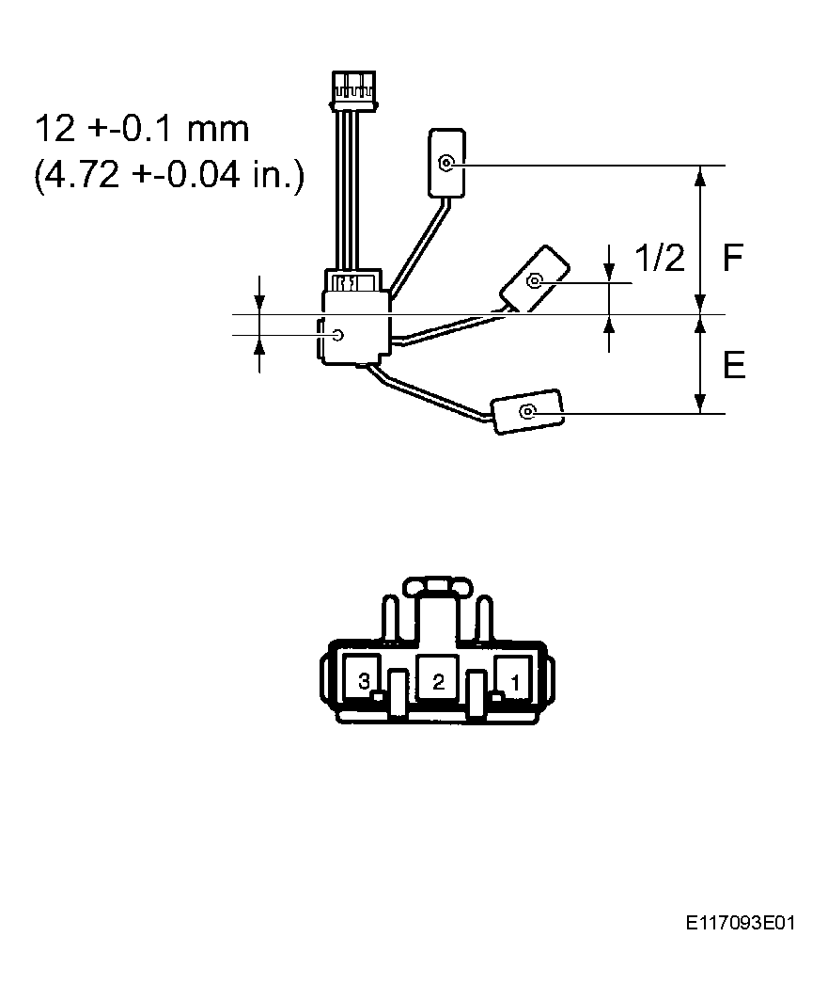
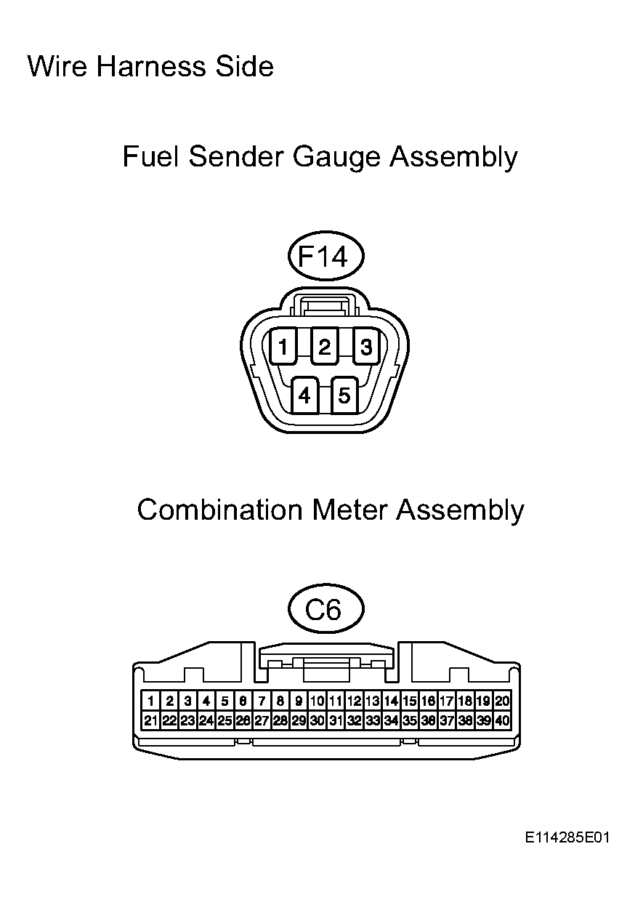

Inspection Procedure
- INSPECT FUEL SENDER GAUGE ASSEMBLY
- Remove the fuel sender gauge.
- Connect an ohmmeter to terminals 2 and 3.
- Measure the resistance of the sender gauge.
Standard resistance
FLOAT POSITION SPECIFIED CONDITIONFloat Level Float Position Specified Condition F 80.8 to 86.6 mm
(3.181 to 3.417 in.)3.0 to 5.0 Ω 1/2 15.9 to 21.9 mm
(0.626 to 0.862 in.)52.0 to 58.0 Ω E 52.2 to 58.2 mm
(2.055 to 2.291 in.)106.0 to 108.0 Ω
NG : REPLACE FUEL SENDER GAUGE ASSEMBLY

Courtesy of © TOYOTA, LICENSE AGREEMENT TMS1002OK : Go to Next Step
- CHECK WIRE HARNESS (FUEL SENDER GAUGE - COMBINATION METER AND BODY GROUND)
- Disconnect the F14 gauge connector.
- Disconnect the C6 meter connector.
- Measure the resistance of the wire harness side connectors.
Standard resistance
TESTER CONNECTION SPECIFIED CONDITIONTester Connection Specified Condition F14-2 - C6-31 Below 1 Ω F14-3 - Body ground
NG : REPAIR OR REPLACE HARNESS AND CONNECTOR

Courtesy of © TOYOTA, LICENSE AGREEMENT TMS1002OK : REPLACE COMBINATION METER ASSEMBLY